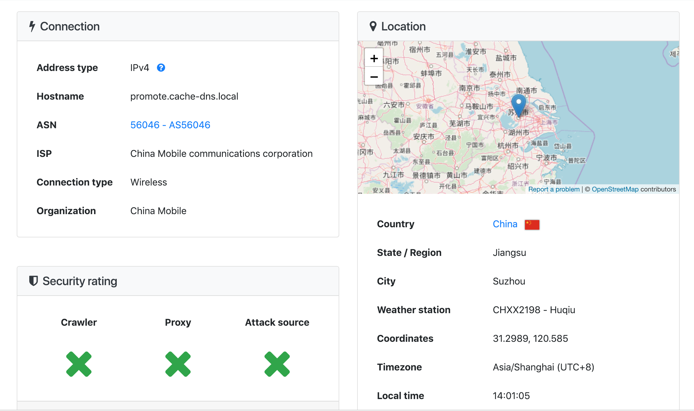

电脑连接的是家中的无线网，信号不太好，在使用IntelliJ进行Debug时在 Finished,saving caches 上耗时过长，但是如果不联网或者连接手机热点则是没有问题的，而且之前在学校宿舍连接室友的无线网也是没有问题的。解决方案是修改本机的hostname
环境
- macOS 10.14
- IntelliJ IDEA 2017.3
问题排查
当然出现速度慢的情况并不会只有我机子上的这一种原因，下面写一下问题的排查，如果不符合下面的情况那么就是别的什么原因了
在终端中输入 hostname，看一下结果会不会是类似于下面的字符
1 | promote.cache-dns.local |
为什么会是这个奇怪的名字，查了它对应的IP，居然是在苏州那边的；上网查了一下说是DNS的问题

出错原因
编写这么一段java代码
1 | public class Main { |
这段代码尝试获取本机的 hostname，运行时就会发现也会有一些卡顿（网络不太好的情况下），在IDE中它应该也是试图执行相似的操作吧
解决方案
方案一：将此名称加入本地的hostname列表
编辑（需要 sudo）文件 /etc/hosts 或 /private/etc/host，把这个名称加入进去（假如host的名称是 promote.cache-dns.local）
1 | 127.0.0.1 localhost promote.cache-dns.local ::1 localhost promote.cache-dns.local |
如果使用的是vim编辑器且忘记以sudo方式打开的话，直接用 :w !sudo tee % 输入密码后就可以保存，详细请见这篇文章：vim切换权限用root保存文件
方案二：直接修改本机的hostname
假如希望改成的名称为 schwarzeni，在终端中输入如下指令
1 | sudo hostname schwarzeni |
详细请见这篇文章 Mac 终端里神秘的 bogon 及解决方法